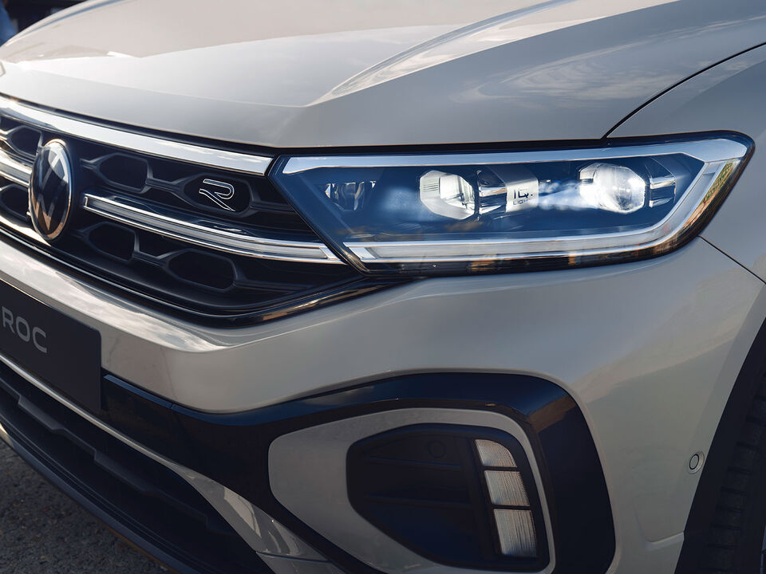
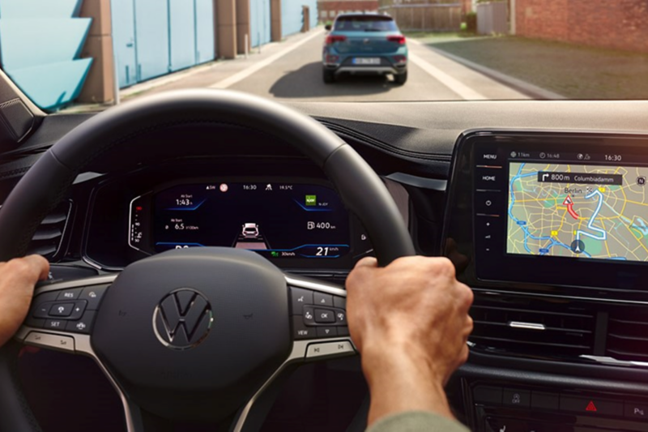
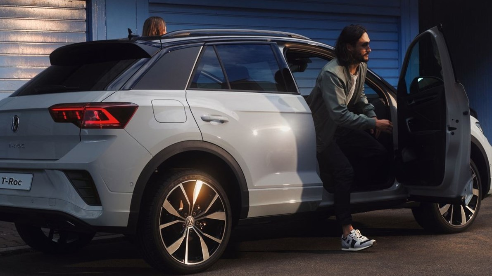

T-Roc
T-Roc. Özgüven Tazelendi.
Trafikteki tartışmasız en şık ve stil sahibi kompakt SUV’lerden biri olan T-Roc, keskinleştirilmiş iç ve dış tasarımı , iç mekanda yeni kalite seviyesi ve geliştirilmiş teknik özellikleriyle adeta özgüven tazeledi. Gelişmiş IQ.LIGHT – LED Matrix farlar ve IQ.LIGHT stop lambaları başta olmak üzere gösterişli aydınlatma sistemleri, güçlü ön ve arka tampon yapısı, modern teknolojiler ve tasarım unsurları ile tamamen yenilenen iç mekanı ile artık güçlü kişiliğini çok daha fazla vurguluyor.
Tasarım

Akıllı aydınlatma teknolojisi.
Gündüz, gece veya kötü havalar… T-Roc’un üstün IQ.LIGHT – LED Matrix farları her koşulda daha iyi bir görüş sağlar. Bu yüksek teknoloji ürünü farlar, gelişmiş bir yapay zeka tarafından kontrol edilir ve sürüş durumuna bağlı olarak spesifik LED segmentleri ayrı ayrı etkinleştirerek veya devre dışı bırakarak her daim en ideal ışık dağılımını garanti eder. Bu sayede, özellikle Dinamik Uzun Far Asistanı “DLA” ile birleştiğinde bu farlar sadece sizin güvenliğinizi değil, aynı zamanda trafikteki diğer sürücülerin de güvenliğini artırırlar. (O) Bununla birlikte T-Roc’un arkasında, tıpkı öndeki gibi yüksek teknolojili IQ. LIGHT stop lambaları görev yapar. Tamamı LED aydınlatmalara sahip park, fren, sinyal, geri vites ve sis lambaları ile modern ve işlevsel bu stop lambaları, aynı zamanda modern Volkswagen’lerin yeni tasarım felsefesini ortaya koyar. (O)
KONFOR

Tüm bilgiler karşınızda.
T-Roc'ta kullanılan tamamen dijital gösterge panelleri, sürüşle ilgili tüm bilgileri çekici grafiklere sahip, yüksek çözünürlüklü renkli ekranlarda özetler. Temel sistem olan 8” Dijital Gösterge Paneli “Digital Cockpit” (L), hız göstergesi, devir saati, ikaz lambaları ve diğer içerikleri, yüksek çözünürlüklü TFT LCD ekrana yansıtır. Daha üst donanımlarda bulunan 10,25" Dijital Gösterge Paneli “Digital Cockpit Pro” (ST) (R), kişisel ihtiyaç ve beklentilerinize göre ekranı ayarlamanıza imkân verir. Temel sürüş verilerinin yanı sıra örneğin, sürüş destek sistemlerinin tümünü çekici grafikler ve animasyonlarla ekrana taşıyabilir veya navigasyon haritası ile medya ekranının bir birleşimini görüntülemeyi seçebilirsiniz.
Teknoloji

Düşük yakıt tüketimi, yüksek performans.
T-Roc'un kendini kanıtlamış 1.5 litre hacimli TSI güç ünitesi, yüksek performans beklentisini düşük yakıt tüketimi ile birleştirir. Turboşarjlı Kademeli Enjeksiyon anlamına gelen "TSI" teknolojisi, turbo boşluğuna sahip olmayan, en alt devirlerde dahi devreye girebilen hafif ve etkin bir egzoz turboşarjı ile Volkswagen'in geçmiş FSI motorlarından gelen direkt benzin enjeksiyon sistemini birleştirir. Bu sayede çok daha küçük motor hacimlerinden, çok daha fazla beygir gücü (PS) ve çekiş gücü (Tork) elde edilir. Üstelik mühendislik aşamasında elde edilen dengeli çalışma karakteri, çok düşük motor sesi ve neredeyse titreşimsiz yolculuklar vadeder. TSI konforu, performansı ve verimliliği. Siz daha denemediniz mi?
Güvenlik

Çok trafik var, endişe yok.
Adaptif Hız Sabitleyici "ACC", daha önce sizin tarafınızdan ayarlanmış maksimum hızı ve öndeki araçla olan güvenli takip mesafesini korumanıza yardımcı olur 1. Dahası; ülkemizde sıkça yaşadığımız dur-kalk trafikte T-Roc, önde seyreden aracın arkasında otomatik olarak durup, tekrar hareket edebilir 2. Üstelik Discover serisi navigasyon sistemleri ile birlikte Adaptif Hız Sabitleyici "ACC", tahmine dayalı hız sabitleyici ve viraj alma desteği işlevini içerecek şekilde genişletilmiştir. Bu, o bölgedeki yasal hız limitlerine uyarak aşırı hızdan kaçınmanıza yardımcı olur. Ek olarak sistem, virajlar, dönüşler ve döner kavşaklar için araç hızını otomatik olarak ayarlamak için navigasyon sistemindeki rota verilerini kullanabilir. (O) 1 Maksimum 210 km/s hıza kadar. 2 Hız limitleri dahilinde.
Volkswagen Hakkında Modeller Ve Fiyatlar İletişim Sosyal Medya
İkinci El Araçlar Tüm Modeller Yetkili Satıcı Facebook
Ticari Araçlar SUV Modeller Online Servis Instagram
Satış Sonrası Hizmetler Araç Fiyatları İletişim Ve Destek Twitter
Kampanyalar Aksesuarlar Bilgi Formu Youtube
|